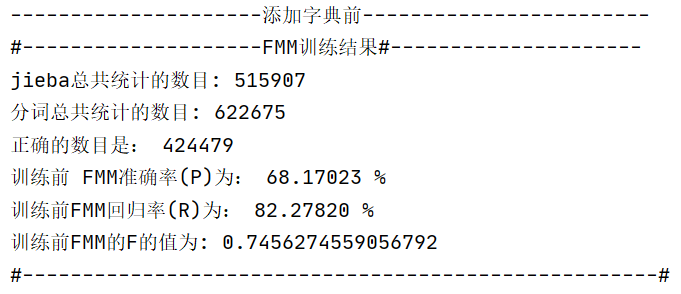
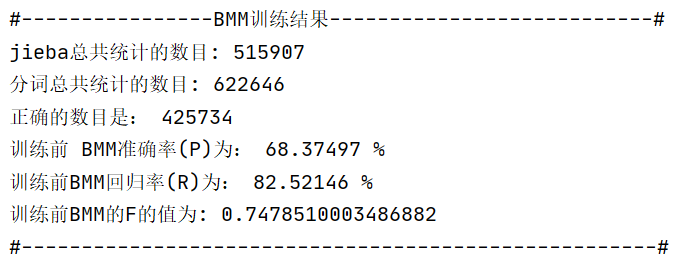
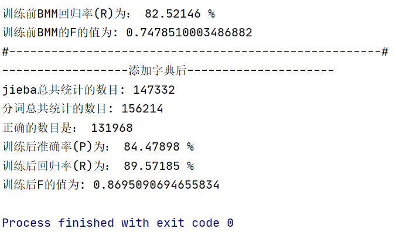

自然语言处理：实验二
| 学院 | 信息工程学院 |
|---|---|
| 指导教师 | 孙媛 |
| 班级 | 19 级计算机科学与技术 1 班 |
| 学生姓名 | John Doe |
| 学号 | 19000000 |
日期： 2021 年 10 月 21 日
摘要
目录
一、实验内容
实验内容：
- 对语料库的文本进行分词并存储。
- 分别采用正向最大匹配算法、逆向最大匹配算法进行分词。以 jieba 分词的分词结果作为标准语料，计算P、R、F值。
二、实验原理
基于词典的切分方法
句子 \(S = c_1 c_2 \cdots c_n\)：句子由若干字符 \(c\) 组成。
假设词 \(w_i = c_1 c_2 \cdots c_m\)，其中 \(m\) 为词典中最长词的字数。
当前的分词算法主要分为两类——基于词典的规则匹配方法和基于统计的机器学习方法。
基于词典的分词算法，本质上就是字符串匹配。将待匹配的字符串基于一定的算法策略，和一个足够大的词典进行字符串匹配，如果匹配命中，则可以分词。根据不同的匹配策略，又分为正向最大匹配法，逆向最大匹配法，双向匹配分词，全切分路径选择等。
最大匹配法（Maximum Matching, MM）主要分为三种：
- 正向最大匹配算法（Forward MM, FMM）：从左到右对语句进行匹配，匹配的词越长越好。这种方式切分会有歧义问题出现。
- 逆向最大匹配算法（Backward MM, BMM）：从右到左对语句进行匹配，同样也是匹配的词越长越好。这种方式同样也会有歧义问题。
- 双向最大匹配算法（Bi-directional MM）：则同时采用正向最大匹配和逆向最大匹配，选择二者分词结果中词数较少者。但这种方式同样会产生歧义问题。由此可见，词数少也不一定划分就正确。
全切分路径选择，将所有可能的切分结果全部列出来，从中选择最佳的切分路径。分为两种选择方法：
- n 最短路径方法。将所有的切分结果组成有向无环图，切词结果作为节点，词和词之间的边赋予权重，找到权重和最小的路径即为最终结果。比如可以通过词频作为权重，找到一条总词频最大的路径即可认为是最佳路径。
- n 元语法模型。同样采用 n 最短路径，只不过路径构成时会考虑词的上下文关系。一元表示考虑词的前后一个词，二元则表示考虑词的前后两个词。然后根据语料库的统计结果，找到概率最大的路径。
此次实验默认使用的是实验指导书中提供的词典。
jieba 分词库
jieba 支持三种分词模式:
- 精确分词，试图将句子最精确的切开，适合文本分析
- 全模式，把句子中所有的可以成词的词语都扫描出来, 速度非常快，但是不能解决歧义
- 搜索引擎模式，在精确模式基础上，对长词进行再次切分，提高recall，适合于搜索引擎。
扩充词典
将过程中遇到的“新词”添加进词典，可以提高文本识别的准确率。
准确率、召回率及 F 值
机器学习中的分类评估包含有以下这么几个概念。
准确率（Accuracy），即正确分类的数量占总的数量的比值，是一个用来衡量分类器预测结果与真实结果差异的一个指标，越接近于 1 说明分类结果越准确。
二分类的结果有以下几种可能性：
- True Positive（TP）：表示将正样本预测为正样本，即预测正确；
- False Positive（FP）：表示将负样本预测为正样本，即预测错误；
- False Negative（FN）：表示将正样本预测为负样本，即预测错误；
- True Negative（TN）：表示将负样本预测为负样本，即预测正确；
精确率（Precision）计算的是预测对的正样本在整个预测为正样本中的比重，而召回率（Recall）计算的是预测对的正样本在整个真实正样本中的比重。因此，一般来说，召回率越高，意味着模型找寻正样本的能力越强。但值得注意的是，在实际任务中，并不明确哪一类是正样本或哪一类是负样本，所以对于每个类别，都可以计算其各项指标。
\[ \begin{align} \text{Accuracy} = & \frac{TP+TN}{TP+FP+FN+TN} \\ \text{Precision} = & \frac{TP}{TP+FP} \\ \text{Recall} = & \frac{TP}{TP+FN} \\ \end{align} \]
实际评估一个系统时，应同时考虑 P 和 R，但同时要比较两个数值，很难做到一目了然。所以常采用综合两个值进行评价的办法，综合指标 F 值就是其中一种。计算公式如下：
\[ \text{F-score} = (1+\beta^2)\frac{P \times R}{\beta^2 \times P + R} \]
其中，\(\beta\) 决定对 P 侧重还是对 R 侧重，通常设定为 1、2 或 \(\frac 1 2\)。\(\beta\) 取值为 1，即对二者一样重视，这时的 F-score 称为 \(F_1\) 值。
分词结果的评估
机器学习中二分类的评估标准，无法直接应用于分词。
在对汉语分词性能进行评估时，采用了常用的３个评测指标：准确率（P）、召回率（R）、综合指标 F 值（F）。准确率表示在切分的全部词语中，正确的所占的比值。召回率指在所有切分词语中（包括切分的和不应该忽略的），正确切分的词语所占的比值。准确率描述系统切分的词语中，正确的占多少。召回率表示应该得到的词语中，系统正确切分出了多少。计算公式如下：
\[ P = \frac{\text{准确切分的词语数}}{\text{切分出的所有词语数}} \]
\[ R = \frac{\text{准确切分的词语数}}{\text{应该切分的词语数}} \]
若一字符串的分词结果为一系列单词，设每个单词按照其在文中的起止位置可记作区间 \([i,j]\)（\(0\leq i \leq j \leq n\)），那么标准答案对应的所有区间就可以构成一集合 \(A\)，作为正类，其他的区间则作为负类;同理，根据分词结果，可以得到集合 \(B\)。
\[TP \cup FN = A \]
\[TP \cup FP = B \]
\[A \cap B = TP \]
则 P、R 的计算公式：\(\text{Precision} = \frac{\vert A\cap B\vert}{\vert B \vert}\)， \(\text{Recall} = \frac{\vert A\cap B\vert}{\vert A \vert}\)
三、整体框架
主要分为功能模块和使用调用。详见主要程序模块。
四、主要程序模块
功能模块设计
考虑到可能会涉及大量词语的存储与检索，尝试使用将词库载入并存储于自己实现的 Trie 字典树结构中。
为了简便起见，使用 Python 中的字典结构模拟节点对象。
def insert(node, s):
current = node
for c in s:
if c not in current['children'].keys():
current['children'][c] = { 'c': c, 'children':dict(), 'cnt': 0 }
current = current['children'][c]
current['cnt'] += 1
def find(node, s):
for c in s:
if c in node['children'].keys():
node = node['children'][c]
else:
return False
return node['cnt'] > 0
def traverse(node, s=''):
for key in node['children'].keys():
s += node['children'][key]['c']
yield from traverse(node['children'][key], s)
s = s[:-1]
if node['cnt'] > 0:
yield s
使用示例：
import my_trie as trie
root = { 'c': '', 'children':dict(), 'cnt': 0 }
trie.insert(root, 'apple')
trie.insert(root, 'loop')
trie.insert(root, 'app')
test_cases = [
('a', False),
('ap', False),
('app', True),
('appl', False),
('apple', True),
('l', False),
('lo', False),
('loo', False),
('loop', True),
('loopa', False),
('loopan', False)
]
for t in test_cases:
print(t[0], '\tExpected: ', t[1], '\tGot: ', trie.find(root, t[0]))
print('All words:')
for w in trie.traverse(root):
print(w)
从文件中加载字典到 Trie 树，以及进行最大正向匹配（FMM）、最大逆向匹配（BMM）的功能：
from my_trie import *
def load_wordlist(filename):
wordlist = { 'c': '', 'children':dict(), 'cnt': 0 }
maxlen = 0
cnt = 0
with open(filename) as f:
if f.readline().strip() == '@Lexicon':
for line in f:
word = line.split()[1]
maxlen = max(maxlen, len(word))
insert(wordlist, word)
cnt += 1
return wordlist, cnt, maxlen
def add_words(wordlist, cnt, maxlen, new_words):
for w in new_words:
if w.startswith("-") or w.startswith("."):
# 排除可能的特殊符号串，如“----------”
continue
elif w.isdigit():
# 同理，排除掉特殊情况，使得字典更具有普遍性
continue
cnt += 1
maxlen = max(len(w), maxlen)
insert(wordlist, w)
return wordlist, cnt, maxlen
def save_wordlist(filename, wordlist):
with open(filename, "w", encoding='utf-8') as out:
cnt = 0
for w in traverse(wordlist):
cnt += 1
out.write(str(cnt) + ' ' + w + '\n')
def FMM(sentence, wordlist, maxlen):
maxlen = max(1, maxlen)
tokens = []
i = 0
while i < len(sentence):
n = len(sentence) - i # 未被切分的字串长度
m = min(maxlen, n)
w = sentence[i:i+m]
while len(w) > 1:
if find(wordlist, w):
break
else:
w = w[0:-1]
tokens.append(w)
i += len(w)
return tokens
def BMM(sentence, wordlist, maxlen):
maxlen = max(1, maxlen)
tokens = []
i = len(sentence)
while i >= 1:
n = i # 未被切分的字串长度
m = min(maxlen, n)
w = sentence[i-m:i]
while len(w) > 1:
if find(wordlist, w):
break
else:
w = w[1:]
tokens.append(w)
i -= len(w)
tokens.reverse()
return tokens
另有使用 Python 内建的 set 类型的版本：FMM_BMM.py。
评估分词结果，以及计算 P、R、F 值：
special_characters = set(list(
"()[]+-*/<>|\\;:\"\'\,.?!@#$%^&~`\{\}（）【】《》，。？“”‘’；：——「」『』〔〕"
))
#包括部分特殊字符，在进行分词比对时将特殊字符排除，以免对结果产生一定的影响
def calc_hits(truth, result):
# 传入分词得到的结果（列表），以及“正确分词”结果
cut_truth = [item for item in truth if item not in special_characters]
cut_result = [item for item in result if item not in special_characters]
i = 0 # 指向 truth 中的 token
j = 0 # 指向 result 中的 token
l1 = 0 # i 所指向词串，对应在原句中的长度
l2 = 0 # j 所指向词串，对应在原句中的长度
hits = 0
missmatches = set()
while i < len(cut_truth) and j < len(cut_result):
if l1 < l2:
l1 += len(cut_truth[i])
i += 1
elif l1 > l2:
l2 += len(cut_result[j])
j += 1
else:
if cut_truth[i] == cut_result[j]:
hits += 1
else:
# 记录未匹配到的“新词”
missmatches.add(cut_truth[i])
l1 += len(cut_truth[i])
i += 1
l2 += len(cut_result[j])
j += 1
return hits, len(truth), len(result), missmatches
def calc_PRF(hits, truth_len, result_len):
P = hits / result_len # precision
R = hits / truth_len # recall
F = (2 * P * R) / (P + R) # F_1
return P, R, F
多文件处理：
# -*-coding:UTF-8 -*-
import os
def cut_txt(file_name, cut_methods_list):
"""
单个TXT文档处理，可以接收多个方法，
:param file_name: 要处理的文件名
:param cut_methods_list: 类似如下的列表 [("name", method), ...]
:return: 存储分词结果的字典，以方法名作为键名
"""
results = dict()
with open(file_name, "r", encoding='utf-8') as f:
for line in f:
for pair in cut_methods_list:
foo_name = pair[0]
foo = pair[1]
results[foo_name] = foo(line)
return results
def write_results(file_name, results, delimiter='/', output_dir_prefix=''):
"""
将分词结果写出到文件
"""
for foo_name in results.keys():
out_file_name = os.path.join(
output_dir_prefix,
file_name + "." + foo_name + ".segmented")
with open(out_file_name, 'w', encoding='utf-8') as out:
out.write(
delimiter.join(results[foo_name]))
def process_path(path, cut_methods_list):
"""
对目录下的所有文件进行处理
:param path: 目录名
:param cut_methods_list: 要采用的分词方法的列表
:return: 文件名及对应结果的生成器
"""
ignore = ['href', '简介', 'segmented']
for root, subdirs, files in os.walk(path):
for f in files:
file_name = os.path.join(root, f)
# 如果文件名含有某些特征，跳过
should_pass = False
for kw in ignore:
if file_name.find(kw) != -1:
should_pass = True
break
if should_pass: continue
# 当前正在处理的文件
print(file_name)
# 获得各方法的分词结果：results
yield file_name, cut_txt(file_name, cut_methods_list)
应用程序
交互式分词程序：
from FMM_BMM_trie import *
from calc import *
import jieba
wordlist, cnt, maxlen = load_wordlist('wordlist.dic')
while True:
s = input().strip()
if s == '#':
break
ground_truth = jieba.lcut(s) # 'ground truth'
fmm = FMM(s, wordlist, maxlen)
bmm = BMM(s, wordlist, maxlen)
print('jieba: ', "/".join(ground_truth))
print('-' * 20)
print('FMM: ', "/".join(fmm))
hits, len_truth, len_result, _ = calc_hits(ground_truth, fmm)
P, R, F = calc_PRF(hits, len_truth, len_result)
print('Hits: ', hits)
print('Precision: ', P)
print('Recall: ', R)
print('F: ', F)
print('-' * 20)
print('BMM: ', "/".join(bmm))
hits, len_truth, len_result, _ = calc_hits(ground_truth, bmm)
P, R, F = calc_PRF(hits, len_truth, len_result)
print('Hits: ', hits)
print('Precision: ', P)
print('Recall: ', R)
print('F: ', F)
打印统计信息帮助函数：
from calc import calc_PRF
def print_stat(foo_name, total_truth_cnt, total_result_cnt, total_hits):
print('{} 分词结果：'.format(foo_name))
print("{:<8} 分词总共的数目：{}".format(foo_name, total_truth_cnt))
print("{:<8} 分词总共的数目：{}".format(foo_name, total_result_cnt))
print("{:<8} 分词正确的数目：{}".format(foo_name, total_hits))
P, R, F = calc_PRF(total_hits, total_truth_cnt, total_result_cnt)
print("准确率（P）：{:.5f} %".format(100 * P))
print("回归率（R）：{:.5f} %".format(100 * R))
print("F 值为：{}".format(F))
对文档进行分词尝试，对最大匹配算法进行评估，并记录新词：
import jieba
from FMM_BMM_trie import * # 根据路径不同修改
from calc import *
from file_processing import *
trainning_file_path = [
"成都理工大学",
"四川大学",
"四川师范大学",
"西南财经大学",
"西南交通大学",
"西南石油大学",
"中央民族大学"
]
wordlist, cnt, maxlen = load_wordlist('wordlist.dic')
FMM_cut = lambda line : FMM(line, wordlist, maxlen)
BMM_cut = lambda line : BMM(line, wordlist, maxlen)
methods = [
('jieba', jieba.lcut),
('FMM', FMM_cut),
('BMM', BMM_cut)
]
tot_hits = {'FMM': 0, 'BMM': 0} # 统计 FMM/BMM 分词结果正确的个数
tot_result_cnt = {'FMM': 0, 'BMM': 0} # 统计 FMM/BMM 分词结果的个数
tot_truth_cnt = 0 # 统计 jieba 分词结果的个数
new_words = []
for path in trainning_file_path:
# 对某一目录下结果进行处理
for filename, results in process_path(path, methods):
truth = results['jieba']
fmm = results['FMM']
bmm = results['BMM']
hits, len_truth, len_result, missmatches = calc_hits(truth, fmm)
tot_hits['FMM'] += hits
tot_result_cnt['FMM'] += len_result
new_words += missmatches
hits, len_truth, len_result, missmatches = calc_hits(truth, bmm)
tot_hits['BMM'] += hits
tot_result_cnt['BMM'] += len_result
new_words += missmatches
tot_truth_cnt += len_truth
# 对同一个文档进行的 FMM 和 BMM 处理，虽然存在差异
# 但大部分分词结果相同，故只将 FMM 分词结果存储
write_results(filename, {'FMM': results["FMM"]}, '/')
import print_helper as helper
# 打印统计信息
helper.print_stat('FMM', tot_truth_cnt, tot_result_cnt['FMM'], tot_hits['FMM'])
helper.print_stat('BMM', tot_truth_cnt, tot_result_cnt['BMM'], tot_hits['BMM'])
# 将新词添加入词典
wordlist, cnt, maxlen = add_words(wordlist, cnt, maxlen, new_words)
save_wordlist('new_wordlist.dic', wordlist)
使用训练后得到的词典进行结果评估：
import jieba
from FMM_BMM_trie import * # 根据路径不同修改
from calc import *
from file_processing import *
wordlist, cnt, maxlen = load_wordlist('new_wordlist.Dic')
print("------------------训练后---------------------")
FMM_cut = lambda line : FMM(line, wordlist, maxlen)
BMM_cut = lambda line : BMM(line, wordlist, maxlen)
methods = [
('jieba', jieba.lcut),
('FMM', FMM_cut),
('BMM', BMM_cut)
]
test_file_path = ["重庆大学", "西华大学"]
tot_hits = {'FMM': 0, 'BMM': 0}
tot_result_cnt = {'FMM': 0, 'BMM': 0}
tot_truth_cnt = 0
for path in test_file_path:
# 对某一目录下结果进行处理
for filename, results in process_path(path, methods):
truth = results['jieba']
fmm = results['FMM']
bmm = results['BMM']
hits, len_truth, len_result, _ = calc_hits(truth, fmm)
tot_hits['FMM'] += hits
tot_result_cnt['FMM'] += len_result
hits, len_truth, len_result, _ = calc_hits(truth, bmm)
tot_hits['BMM'] += hits
tot_result_cnt['BMM'] += len_result
tot_truth_cnt += len_truth
import print_helper as helper
# 打印统计信息
helper.print_stat('FMM', tot_truth_cnt, tot_result_cnt['FMM'], tot_hits['FMM'])
helper.print_stat('BMM', tot_truth_cnt, tot_result_cnt['BMM'], tot_hits['BMM'])
五、实验结果



六、总结
关于如何计算正确匹配数
简单的方法是，
hits += len([i for i in result if i in truth])
miss += [i for i in result if i not in truth]
使用这种方法，当一句话中出现多个相同词汇时，可能会对结果造成影响。可以根据逗号（，）等符号将语句切分为不同的小段，并对每一个小段进行处理，可以较大程度上减少相同词汇出现的概率，一定程度上保证统计的正确率。
本次实验采用了如 calc.py 中 calc_hits 方法的实现。